6 Formulieren
- Hoofdformulier, subformulier en gekoppeld formulier.
- Het werken met besturingselementen.
- Gegenereerde formulieren en handmatige aanpassingen.
- Het opmaken van een formulier.
- Berekeningen in een formulier.
- Formulieren met een grafiek.
Formulieren tonen een georganiseerd en opgemaakt overzicht van velden in tabellen en query’s. Ze zijn erg belangrijk voor de gegevensinvoer.
6.1 Over formulieren maken
Gegevens kunnen rechtstreeks in de tabellen ingevoerd worden. In de praktijk gebeurt dat alleen bij zeer eenvoudige tabellen. Meestal worden formulieren gebruikt voor de gegevensinvoer. Eenvoudige formulieren zijn vaak gebaseerd op gegevens uit één tabel of query. Daarnaast heb je geavanceerde formulieren zoals een hoofd-subformulier of gekoppelde formulieren, waarvan de gegevens uit gerelateerde tabellen of query’s komen.
Behalve dat je formulieren een aantrekkelijk uiterlijk kunt geven, is het belangrijker dat je hiermee mogelijkheden hebt om allerlei controles (validaties) op de invoer toe te passen. En verder kun je op formulieren zogenaamde besturingselementen plaatsen. Voorbeelden hiervan zijn keuzelijsten, selectievakjes, knoppen, toelichtende tekst, enz.
Je kunt een formulier vanaf nul opbouwen, maar vaak laat je Access eerst automatisch een formulier genereren, of maak je gebruik van de Wizard Formulier. Het dan ontstane formulier kun je daarna handmatig aanpassen.
Hoofd- en subformulieren
Een subformulier is een formulier dat in een ander formulier, het hoofdformulier, is opgenomen. Subformulieren worden veel gebruikt wanneer je gegevens weer moet geven uit tabellen en query’s met een een-op-veel relatie. De gegevens van de een-kant staan dan in het hoofdformulier en de gegevens uit de veel-kant in het subformulier.
Hoofdformulier: Bevat de gegevens van een klant (afkomstig uit tabel Klant).
Subformulier: Bevat de orders van de klant (afkomstig uit tabel Orders).
Het hoofdformulier en subformulier zijn gekoppeld, zo dat in het subformulier alleen records worden weergegeven die gerelateerd zijn aan het record in het hoofdformulier.
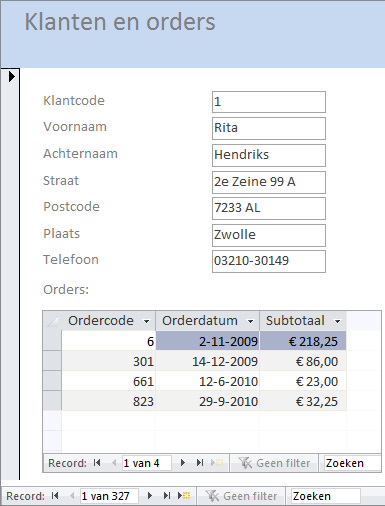
Figuur 6.1: [Hoofdformulier Klanten met subformulier Orders.
Gekoppelde formulieren
Gekoppelde formulieren zijn losse formulieren die aan elkaar gerelateerd zijn. Een van de formulieren, ook hoofdformulier genoemd, heeft een opdrachtknop waarmee het andere formulier wordt geopend en de records tussen de twee formulieren worden gesynchroniseerd. Achter de knop zit programmacode (VBA) die er voor zorgt dat het subformulier geopend wordt. Deze VBA code wordt automatisch door de Wizard gemaakt. Je hoeft dus niet te kunnen programmeren om hiermee te werken.
Of je met gekoppelde formulieren of met opgenomen subformulieren werkt hangt meestal af van de methode van werken van de gebruiker. Wanneer je alleen de primaire gegevens van een klant nodig hebt, dan hoef je niet meteen alle orderinformatie van deze klant te zien. Dan is het vaak handiger om een knop op het formulier te hebben waarmee je de bijbehorende orderinformatie tevoorschijn kunt halen.
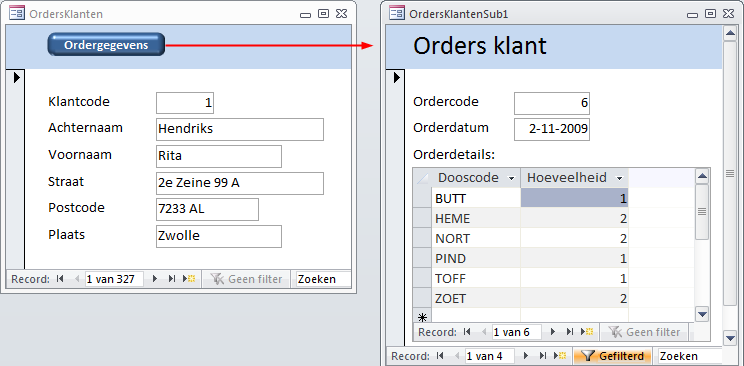
Figuur 6.2: Twee formulieren gekoppeld met gesynchroniseerde gegevens.
6.2 Besturingselementen en Indelingen
Besturingselementen
Besturingselementen zijn onderdelen van een formulier of rapport waarmee je gegevens kunt invoeren, bewerken of weergeven. Een tekstvak is bijvoorbeeld het meest gebruikte besturingselement voor het weergeven van gegevens. Andere veelgebruikte besturingselementen zijn opdrachtknoppen, selectievakjes en keuzelijsten.
Besturingselementen kunnen afhankelijk, niet-afhankelijk of berekend zijn:
- Afhankelijk besturingselement
- Een besturingselement waarvan de gegevensbron een veld in tabel of een query is. Je gebruikt afhankelijke besturingselementen om waarden weer te geven die afkomstig zijn uit velden.
- Niet-afhankelijk besturingselement
- Een besturingselement zonder gegevensbron. Je gebruikt niet-afhankelijke besturingselementen voor het weergeven van informatie, afbeeldingen, lijnen, …
- Berekend besturingselement
- Een besturingselement waarvan de gegevensbron een expressie is en niet een veld.
Indelingen
Indelingen zijn hulpmiddelen waarmee je de besturingselementen horizontaal en verticaal kunt uitlijnen. Indelingen zijn optioneel en worden meestal gebruikt om het formulier een uniform uiterlijk te geven. Indelingen zijn er in twee soorten: tabelvormig en gestapeld.
- Tabelvormige indeling
- In tabelvormige indelingen worden besturingselementen gerangschikt in rijen en kolommen zoals in een werkblad, met labels aan de bovenkant.
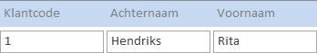
Figuur 6.3: Voorbeeld van een tabelvormige indeling
- Gestapelde indeling
- In gestapelde indelingen worden besturingselementen verticaal gerangschikt zoals op een papieren formulier, met een label links van elk besturingselement.
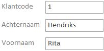
Figuur 6.4: Voorbeeld van een gestapelde indeling.
Besturingselementen bewerken
Omdat op formulieren vaak besturingselementen anders geordend moeten worden is het van belang om te weten hoe je besturingselementen kunt bewerken en verplaatsen. Veel bewerkingen kun je op meerdere besturingselementen tegelijk uitvoeren. Om besturingselementen te bewerken moet je deze altijd eerst selecteren. Zorg er ook voor dat altijd het Eigenschappenvenster zichtbaar is.
- selecteren: Klik op het besturingselement.
- meervoudige selectie: Klik met ingedrukte Shift toets op de besturingselementen, of sleep met de muis een rechthoekig kader om de besturingselementen.
- selectie opheffen: Op een lege plek in het formulier klikken.
- verplaatsen: Versleep het besturingselement via het vierkantje linksboven. Precieze plaats op het formulier kan via het Eigenschappenvenster ingesteld wordt.
- afmetingen: Versleep een van de formaatgrepen (in het midden of in de hoekpunten van de selectierechthoek). Precieze afmetingen kunnen via het Eigenschappenvenster ingesteld worden.
- uitlijnen: Via de opties bij tabblad Schikken > groep uitlijning bepalen.
- verwijderen: Via de Delete toets.
6.3 Taak: Automatisch formulier
Wanneer nieuwe records aan een tabel moeten worden toegevoegd, is het meestal de bedoeling dat alle velden een waarde kunnen krijgen. Zo’n formulier moet dan wel alle velden van de tabel bevatten. De snelste manier om zo’n formulier te maken is door eerst de tabel te selecteren en via de opdracht Formulier automatisch een formulier te laten genereren dat alle velden bevat. Daarna kan desgewenst handmatig het formulier worden aangepast.
In deze taak wordt een formulier gemaakt waarmee een magazijnmedewerker de magazijnvoorraad van een doos kan wijzigen en eventueel aan kan geven of een doos al dan niet uit productie is. De andere doosgegevens moet de medewerker niet via dit formulier kunnen wijzigen. Het formulier moet er ongeveer als volgt uit gaan zien:
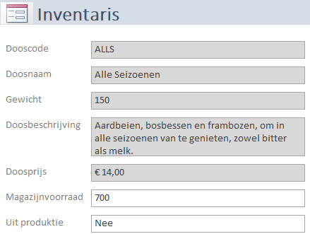
Figuur 6.5: Eindresultaat formulier inventaris.
Open zonodig database snoep365.accdb.
Selecteer de tabel Dozen. Deze hoeft niet geopend te worden.
Klik tab Maken > Formulier (groep Formulieren). Het formulier wordt aangemaakt en geopend in de Indelingsweergave.
Als in Access een tabel wordt gevonden met een een-op-veel-relatie met de tabel of query waarmee je het formulier hebt gemaakt, dan wordt automatisch een subgegevensblad aan het formulier toegevoegd op basis van de gerelateerde tabel of query. Er worden geen gegevensbladen aan het formulier toegevoegd als er meer tabellen zijn die een een-op-veel-relatie hebben met de tabel op basis waarvan je het formulier hebt gemaakt.
In dit geval is het formulier gebaseerd op de tabel Dozen en is er een een-op-veel relatie tussen de tabel Dozen en de tabel Orderdetails. Het subgegevensblad geeft alle records uit Orderdetails weer die betrekking hebben op het huidige record van tabel Dozen.
Als je het subgegevensblad niet in het formulier wilt hebben, kun je dit in de Indelingsweergave verwijderen door het gegevensblad te selecteren en op de Delete toets te drukken.
Wanneer het subgegevensblad aanwezig is, selecteer het dan en druk vervolgens op de Delete toets om het te verwijderen.
Schakel over naar de Ontwerpweergave.
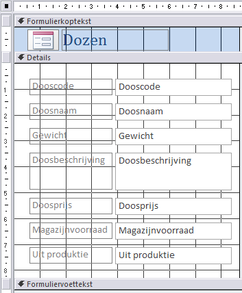
Figuur 6.6: Ontwerpweergave formulier inventaris.
Bij een formulier die op deze manier gemaakt wordt heeft elk veld twee besturingselementen: een Tekstvak en een daaraan gekoppeld Bijschrift.
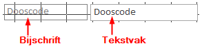
Figuur 6.7: Tekstvak met gekoppeld vak bijschrift.
Alle bijschriften staan verticaal gerangschikt en alle tekstvakken ook. Dit heet een Gestapelde indeling. Hierdoor kan een enkel besturingselement niet op een willekeurige plaats op het formulier gezet worden. Is dat wel de bedoeling, dan moet je eerst de indeling voor dat besturingselement verwijderen via tab Schikken > Indeling verwijderen (groep Tabel).
- Selecteer de tekst
Dozenin de Formulierkoptekst en wijzig deze inInventaris. Wijzig dan de eigenschappen Tekengewicht inveten Tekengrootte in20.
Het Eigenschappenvenster staat meestal aan de rechterkant van het scherm en kan zichtbaar en onzichtbaar gemaakt worden via sneltoets F4. En om hierin sneller een bepaalde eigenschap te vinden kun je deze alfabetisch sorteren met de knop  rechtsboven in het venster.
rechtsboven in het venster.
- Selecteer de tekstvakken van alle velden en wijzig de waarde van eigenschap Breedte in
8cm. Hef daarna de selectie op door ergens anders in het formulier te klikken.
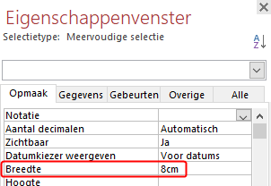
Figuur 6.8: Instelling eigenschap breedte.
De eigenschap Vergrendeld kan gebruikt worden om de waarde in een veld te beveiligen zodat de gebruiker deze niet kan wijzigen.
- Selecteer alle tekstvakken behalve Magazijnvoorraad en Uit produktie en wijzig de waarde van eigenschap Vergrendeld (tab Gegevens) in
Ja.
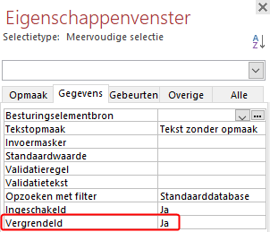
Figuur 6.9: Instelling vergrendeling tekstvak via eigenschappenvenster.
-
Houd deze velden geselecteerd en wijzig dan de achtergrondkleur van wit in lichtgrijs. Je kunt dat op een van de volgende manieren doen:
- Wijzig eigenschap Achtergrondkleur.
- Rechtermuisklik op een van de geselecteerde velden en kies uit het snelmenu voor Opvul-/achtergrondkleur.
Schakel over naar Formulierweergave om het resultaat te zien.
Sluit het formulier en laat de wijzigingen bewaren.
Noem het formulier in Inventaris en klik op OK.
6.4 Taak: Hoofd- en subformulier
De gemakkelijkste manier om een hoofdformulier met een subformulier te maken is met behulp van de Wizard Formulier. Deze Wizard maakt beide formulieren en zorgt voor de onderlinge koppeling.
De opdracht is om een formulier te maken dat van een klant de klantcode, naam en adres toont en verder de bijbehorende orders met ordercode, orderdatum en subtotaal.
Op het hoofdformulier komen de klantgegevens, alle benodigde velden hiervoor zijn beschikbaar in de tabel Klanten. In het subformulier staan de gegevens over de order zelf: ordercode, orderdatum en een berekend subtotaal. Het subtotaal kan berekend worden uit het veld Hoeveelheid (tabel Orderdetails) en het veld Doosprijs (tabel Dozen).
Om het subtotaal te berekenen heb je een query nodig die al deze gegevens als bron kan aanbieden aan het te maken subformulier. Een dergelijke query is reeds beschikbaar en heet Orders met subtotalen. Deze query bevat ook het veld Klantcode, zodat de koppeling tussen hoofd- en subformulier gemaakt kan worden.
Open zonodig database snoep365.accdb.
Kiestab Maken > Wizard Formulier (groep Formulieren).
Selecteer Tabel: Klanten onder Tabellen/query’s .
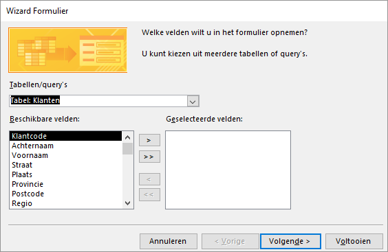
Figuur 6.10: Wizard Formulier keuze velden.
Voeg achtereenvolgens de volgende velden toe: Klantcode, Voornaam, Achternaam, Straat, Postcode, Plaats en Telefoon.
Selecteer Query: Orders met subtotalen onder Tabellen/query’s. De velden van de query worden getoond in het vak Beschikbare velden.
Voeg achtereenvolgens de volgende velden toe: Ordercode, Orderdatum en Subtotaal. Klik dan op Volgende.
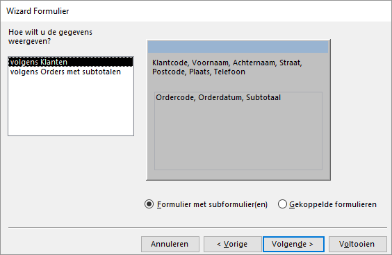
Figuur 6.11: Wizard Formulier keuze weergave.
Controleer de instellingen en klik dan op Volgende. De wizard vraagt nu naar de layout voor het subformulier: tabelvorm of gegevensblad.
Selecteer layout Als gegevensblad en klik op Volgende.
Je kunt nu namen (titels) aan de formulieren geven. Er zijn al default titels beschikbaar, maar je kunt deze wijzigen.
-
Wijzig de standaardtitels van de formulieren.
- Titel formulier:
Klanten en orders - Titel subformulier:
Klanten en orders subformulier.
- Titel formulier:
Klik op Voltooien.
Figuur 6.12: Formulier klanten en orders.
Desgewenst kan zowel het ontwerp van het hoofdformulier als van het subformulier gewijzigd worden.
6.5 Taak: Invoerformulier Klanten
In deze taak wordt een formulier gemaakt waarmee voor een nieuwe klant de gegevens kunnen worden ingevoerd en van een bestaande klant de gegevens kunnen worden gewijzigd. Verder worden een aantal vaardigheden geoefend in het verplaatsen en uitlijnen van besturingselementen om het formulier in de volgende opmaak te brengen.
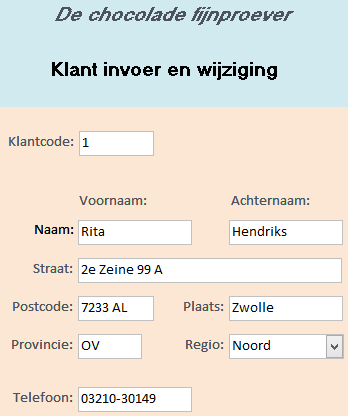
Figuur 6.13: Invoerformulier klanten.
Open zonodig database snoep365.accdb.
Selecteer de tabel Klanten. Deze hoeft niet geopend te worden.
Klik tab Maken > Formulier (groep Formulieren). Het formulier wordt aangemaakt en geopend in de Indelingsweergave.
Omdat het formulier gebaseerd is op de tabel Klanten en deze tabel een een-op-veel relatie heeft met de tabel Orders, wordt automatisch een subgegevensblad gebaseerd op de tabel Orders, aan het formulier toegevoegd. Het subgegevensblad geeft alle records uit Orders weer die betrekking hebben op het huidige record van tabel Klanten.
Selecteer het subgegevensblad en verwijder deze met toets Delete.
Schakel over naar de Ontwerpweergave.
Verwijder het logo in de formulierkoptekst door deze eerst te selecteren en dan te verwijderen met de toets Delete.
Bewaar het formulier onder de naam Klant invoer en wijziging via de knop Opslaan
 in de Werkbalk Snelle toegang.
in de Werkbalk Snelle toegang.Maak de hoogte van de Formulierkoptekst wat groter door de scheidingslijn met Details wat naar beneden te slepen.
Selecteer de tekst
Klantenin het label in de formulierkoptekst en wijzig deze inDe chocolade fijnproever. Wijzig de opmaak van de tekst inMS Sans Serif,14 pt,vetencursief.Selecteer het besturingselement Label via tab Ontwerp > Label (groep Besturingselementen) en teken onder de eerste formulierkoptekst een kader voor de tweede koptekst. Voer als tekst in
Klant invoer en wijziging. Wijzig de opmaak van de tekst inMS Sans Serif,14 pt,Vet,kleur Zwart.Selecteer alle besturingselementen in de sectie Detail door vanuit de linkerbovenhoek met ingedrukte linkermuisknop een kader naar de rechteronderhoek te trekken. Laat daarna de muisknop los. Alle besturingselementen in de sectie Detail zijn nu geselecteerd.
Kies tab Schikken > Indeling verwijderen (groep Tabel). De geselecteerde besturingselementen zijn nu uit de gestapelde indeling gehaald en daardoor vrij op het formulier te verplaatsen.
Hef de selectie op.
-
Versleep de besturingselementen op het formulier zodanig dat de lay-out zo goed mogelijk lijkt op de gewenste indeling. Maak hiervoor gebruik van de hierna aangegeven tips.
- Je kunt geselecteerde besturingselementen uitlijnen via tab Schikken > Uitlijnen (groep Formaat en volgorde).
- Je hebt een nieuw Bijschrift nodig met de tekst
Naam:. - Je kunt de afmetingen van de besturingselementen wijzigen met de eigenschappen Breedte en Hoogte.
- Je kunt de plaats van linkerbovenhoek van een besturingselement wijzigen met de eigenschappen Boven en Links.
- Je kunt de achtergrondkleur instellen met de eigenschap Achtergrondkleur.
Schakel over naar de Formulierweergave en test de werking van het formulier.
Sluit het formulier en bewaar de wijzigingen.
6.6 Taak: Invoerformulier Bonbons
In deze taak wordt een formulier gemaakt waarmee de gegevens voor een nieuwe bonbon kunnen worden ingevoerd en van een bestaande bonbon de gegevens gewijzigd kunnen worden. Verder wordt bij een aantal velden het besturingselement Tekstvak vervangen door een Keuzelijst, al dan niet met invoervak. De gewenste lay-out voor het formulier is in de volgende afbeelding weergegeven.
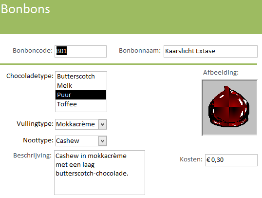
Figuur 6.14: Invoerformulier bonbons.
Open zonodig database snoep365.accdb.
Selecteer de tabel Bonbons. Deze hoeft niet geopend te worden.
Klik tab Maken > Formulier (groep Formulieren). Het formulier wordt aangemaakt en geopend in de Indelingsweergave.
Schakel over naar de Ontwerpweergave.
Verwijder de tabel Doosdetails in het onderste deel van het formulier en het logo in de formulierkoptekst.
Verwijder het logo in de formulierkoptekst.
Bewaar het formulier onder de naam Bonbon informatie via de knop Opslaan
** in de Werkbalk Snelle toegang.Wijzig de opmaak van de koptekst in:
Calibri,22 pt,vet,kleur witenachtergrond groen.Selecteer alle besturingselementen in de sectie Detail en verwijder de gestapelde indeling via tab Schikken > Indeling verwijderen (groep Tabel). Je kunt nu met alle besturingselementen afzonderlijk werken.
Hef de selectie op.
Verwijder de velden Chocoladetype, Vullingtype en Noottype. Verplaats de overige velden zodat de lay-out op de gewenste lijkt.
Selecteer het besturingselement Lijn via tab Ontwerp > Keuzelijst (groep Besturingselementen) en teken een horizontale lijn onder de velden Bonboncode en Bonbonnaam. Geef de lijn dikte van 2pt en dezelfde kleur als de achtergrond van de koptekst.
Selecteer het besturingselement Keuzelijst via tab Ontwerp > Keuzelijst (groep Besturingselementen) en teken een kader voor het veld Chocoladetype. Na het tekenen van het kader wordt de Wizard Keuzelijst opgestart.
-
Beantwoord de vragen die de Wizard achtereenvolgens stelt als volgt:
- De waarden zullen worden getypt.
- Aantal kolommen is 1. De in te typen waarden zijn:
Butterscotch,Melk,PuurenToffee. - De geselecteerde waarde opslaan in het veld Chocoladetype.
- De geselecteerde waarde opslaan in het veld Chocoladetype.
- Tekst voor het label bij de keuzelijst:
Chocoladetype:
Na het Voltooien van de Wizard kom je weer terug in de Ontwerpweergave.
Maak op analoge wijze een Keuzelijst met invoervak voor Vullingtype met de waarden:
Amaretto,Bosbes,Kersecrème,Kokos,Marsepein,MokkacrèmeenGeen.Maak op analoge wijze een Keuzelijst met invoervak voor Noottype met de waarden:
Amandel,Cashew,Hazelnoot,Macadamia,Para,Pecan,Pistache,WalnootenGeen.Schakel over naar de Formulierweergave en test de werking van het formulier.
Sluit het formulier en bewaar de wijzigingen.
6.7 Taak: Invoerformulier Dozen
In deze taak wordt in een bestaand subformulier een Tekstvak vervangen door een Keuzelijst met invoervak. Hiervoor moet eerst een bijbehorende query gemaakt worden.
Met het bestaande formulier Dozen kan een bonbon alleen maar via de bonboncode gekozen worden. De opdracht is om dat ook mogelijk te maken voor de naam van de bonbon.
Het formulier Dozen bestaat uit het hoofdformulier Dozen en het subformulier Dozen subformulier. De keuze van de bonbon gebeurt in het subformulier. Dus alleen het subformulier hoeft aangepast te worden. Daar moet het tekstvak Bonbonnaam vervangen worden door een Keuzelijst met invoervak.
Echter Dozen subformulier is gebaseerd op de tabel Doosdetails en hierin komt Bonbonnaam niet voor. Daarom zal er een query Kies bonbonnaam gemaakt moeten worden, gebaseerd op de tabel Bonbons, die als resultaat de kolommen Bonbonnaam en Bonboncode geeft en die gesorteerd is op Bonbonnaam. Deze nieuwe query is dan de gegevensbron voor de keuzelijst met invoervak.
Query Kies bonbonnaam
Open zonodig database snoep365.accdb
Kies tab Maken > Queryontwerp (groep Query’s) en voeg de tabel Bonbons toe. Voeg van deze tabel de velden Bonbonnaam en Bonboncode toe. Sorteer Oplopend op Bonbonnaam.
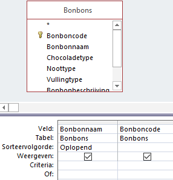
Figuur 6.15: Ontwerp query voor invoer bonbonkeuze.
- Sluit de query en bewaar deze onder de naam Kies bonbonnaam.
Aanpassing subformulier
Open het formulier Dozen subformulier in de Ontwerpweergave.
Verwijder in de sectie Details het veld Bonbonnaam.
Selecteer [tab Ontwerp > Keuzelijst met invoervak (groep Besturingselementen)] en trek een rechthoekig kader op de plaats van het verwijderde veld Bonbonnaam. De Wizard Keuzelijst met invoervak wordt opgestart.
-
Beantwoord de vragen van de Wizard achtereenvolgens als volgt:
- De waarden voor de keuzelijst worden opgezocht in een tabel of query.
- De waarden voor de keuzelijst worden geleverd door de query Kies bonbonnaam.
- De toe te voegen velden zijn Bonbonnaam en Bonboncode.
- Sorteervolgorde is Oplopend op Bonbonnaam.
- Maak de kolombreedtes passend door een dubbelklik op de rechtergrens van elke kolom.
- De kolom Bonboncode bevat de waarde die opgeslagen moet worden.
- De waarde moet opgeslagen worden in het veld Code.
- Typ een willekeurige tekst voor het label in. Dit label wordt in de volgende stap verwijderd omdat de labeltekst al in de formulierkoptekst voorkomt.
Selecteer het zojuist ingevoerde label dat bij de keuzelijst hoort en druk dan op de Delete toets om deze te verwijderen.
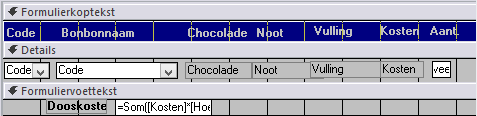
Figuur 6.16: Keuzelijst op subformulier dozen.
- Selecteer de Keuzelijst met invoervak en controleer in Eigenschappenvenster (tab Gegevens) de eigenschap Alleen lijst de waarde
Jaheeft. Zo niet, dan de waarde wijzigen inJa.
Door deze instelling kunnen alleen bonbonnamen uit de lijst gekozen worden en kunnen er geen nieuwe bonbonnamen ingevoerd worden.
Sluit het formulier Dozen subformulier en bewaar de wijzigingen.
Test de nieuwe keuzelijst uit.
6.8 Taak: Invoerformulier Orders
Voor het bekijken van een bestaande order en het invoeren van een nieuwe order moet een orderformulier gemaakt worden, zie de volgend afbeelding.
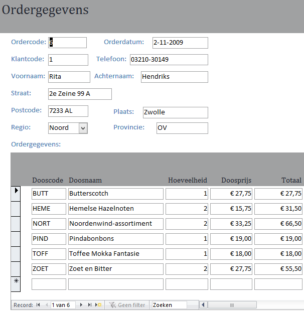
Figuur 6.17: Invoerformulier orders.
De gegevens op het hoofdformulier zijn afkomstig uit de tabel Klanten en uit de tabel Orders. Er moet dus een query Orders-Klanten gemaakt worden, gebaseerd op deze twee tabellen, welke de gewenste gegevens aanlevert.
De gegevens op het subformulier zijn afkomstig uit de tabel Orderdetails en uit de tabel Dozen. Er moet dus een query Orderdetails-Dozen gemaakt worden, gebaseerd op deze twee tabellen, welke de gewenste gegevens aanlevert.
Maak daarna een formulier met subformulier en baseer het hoofdformulier op de query Orders-Klanten en het subformulier op de query Orderdetails-Dozen. Voeg de gewenste velden voor zowel het hoofdformulier als het subformulier toe.
Query Orders-Klanten
Open zonodig database snoep365.accdb
Kies tab Maken > Queryontwerp (groep Query’s) en voeg de tabellen Orders en Klanten toe.
Voeg van beide tabellen alle velden toe.
Met de keuze * kun je alle velden van een tabel toevoegen.
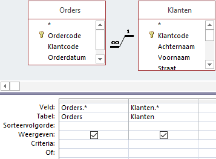
Figuur 6.18: Ontwerp query orders klanten.
- Sluit de query en bewaar deze onder de naam Orders-Klanten.
Query Orderdetails-Dozen
Kies tab Maken > Queryontwerp (groep Query’s) en voeg de tabellen Orderdetails en Dozen toe.
Voeg van beide tabellen alle velden toe.
Maak een kolom met de naam Totaal die de berekening
Hoeveelheid*Doosprijsuitvoert.
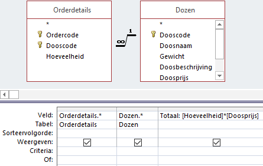
Figuur 6.19: Ontwerp query orderdetails dozen.
- Sluit de query en bewaar deze onder de naam Orderdetails-Dozen.
Formulier
Kies tab Maken > Wizard Formulier.
Selecteer query Orders-Klanten en voeg alle velden behalve Orders.Klantcode toe.
Selecteer query Orderdetails-Dozen en voeg achtereenvolgens de volgende velden toe: Dozen.Dooscode, Doosnaam, Hoeveelheid, Doosprijs en Totaal.
Klik op Volgende en laat dan de gegevens weergeven volgens Orders-Klanten. Hiermee wordt het hoofdformulier gebaseerd op de query Orders-Klanten en het subformulier op de query Orderdetails-Dozen.
Klik op Volgende en selecteer dan de opmaak voor het subformulier In tabelvorm.
Kies een stijl en klik dan op Volgende.
Ken de volgende namen toe: Ordergegevens hoofdformulier en Ordergegevens subformulier en klik op Voltooien. Het formulier wordt geopend.
Pas desgewenst de lay-out van beide formulieren aan zodat het lijkt op het gewenste formulier voor ordergegevens.
6.9 Taak: Ordertotaal
Het formulier dat gemaakt is in 6.8 wordt zodanig gewijzigd dat ook het totale orderbedrag berekend en getoond wordt.
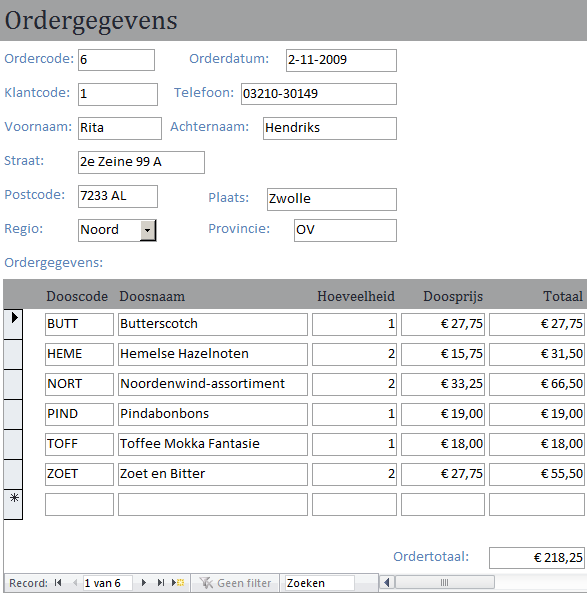
Figuur 6.20: Orders met totaalbedrag.
Open zonodig database snoep365.accdb.
Open formulier Ordergegevens subformulier in Ontwerpweergave.
Selecteer in het Eigenschappenvenster het type Formulier en stel dan Standaardweergave in op Doorlopend formulier.
Deze instelling is nodig omdat anders het totaal niet kan worden berekend.
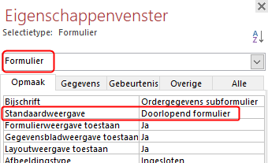
Figuur 6.21: Standaardweergave subformulier.
Maak de verticale ruimte voor de formuliervoettekst wat groter door de onderkant naar beneden te slepen.
Selecteer tab Ontwerp > Tekstvak (groep Besturingselementen) en teken een rechthoekig kader in de formuliervoettekst waar het totaalbedrag moet komen.
Stel de waarde voor de eigenschap Besturingselementbron van het tekstvak in op
=Som([Totaal])en de waarde van eigenschap Notatie opValuta.Sluit het subformulier en bewaar de wijzigingen.
Open formulier Ordergegevens hoofdformulier en controleer of alles in orde en naar wens is.
6.10 Taak: Formulier met grafiek
De opdracht is om een grafiek te maken voor het jaar 2010 waarin de omzet per maand per doos bekeken kan worden. Zie het volgende voorbeeld.
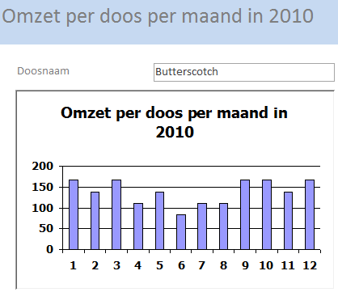
Figuur 6.22: Formulier met grafiek.
De verschillende onderdelen in de grafiek kunnen uit bepaalde tabellen gehaald of berekend worden.
De Doosnaam zit in de tabel Dozen.
De Omzet moet berekend worden via de berekening
[Hoeveelheid] * [Doosprijs].Het veld Doosprijs zit ook in de tabel Dozen.
Het veld Hoeveelheid zit in de tabel Orderdetails.
Maand en Jaar kunnen berekend worden met de functies
Month([Orderdatum])enYear([Orderdatum]).Het veld Orderdatum zit in de tabel Orders.
Groepering eerst op Doosnaam en daarna op Maand.
Er moet gefilterd worden op het jaar
2010.
Er moet dus een query gemaakt worden die de benodigde gegevens (Doosnaam, Omzet, MaandMaand en Jaar) aanlevert. Groeperen en filteren kan via de rij Totaal in het queryraster. Voor groeperen kies je voor Group By en voor filteren maak je de keuze Waar. Voor het laatste moet dan ook nog bij Criteria de waarde 2010 worden opgegeven.
De werkzaamheden bestaan uit twee delen. Eerst moet de query gemaakt worden en daarna het formulier met de grafiek.
Query maken
Open zonodig database snoep365.accdb.
Kies tab Maken > Queryontwerp (groep Query’s) en voeg achtereenvolgens de tabellen Dozen, Orderdetails en Orders toe.
Voeg het veld Doosnaam uit tabel Dozen in de eerste kolom toe en daarna in de volgende kolommen de expressies
Maand:Month([Orderdatum]),Omzet:[Hoeveelheid]*[Doosprijs]enJaar:Year([Orderdatum]).Kies tab Ontwerp > Totalen (groep Weergeven/verbergen).
Wijzig in de derde kolom de Group By in
Somen in de vierde kolom inWaar. Voeg in de vierde kolom als criterium toe2010. Laat dit laatste veld niet weergeven.
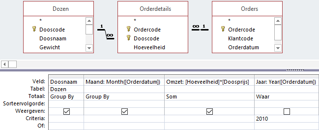
Figuur 6.23: Ontwerp query omzet
- Sluit de query en bewaar deze onder de naam Omzet per doos per maand in 2010.
Wanneer je na het sluiten de query weer opent in de Ontwerpweergave, dan heeft Access een paar wijzigingen aangebracht in de kolom Omzet.
- Waarde in rij Veld is nu:
Omzet: Som([Hoeveelheid]*[Doosprijs]) - Waarde in veld Totaal is nu:
Expressie
Formulier maken
Kies tab Maken > Wizard Formulier. Voeg tabel Dozen toe en van deze tabel alleen het veld Doosnaam. Klik op Volgende.
-
Beantwoord de vragen van de Wizard als volgt:
- Formulier opmaak Als gegevensblad.
- Titel
Omzet per doos per maand in 2010. - Bewaar het formulier onder dezelfde naam als de titel.
Open het formulier in de Ontwerpweergave. Maak wat ruimte voor de grafiek in de sectie Details door de onderkant naar beneden te slepen.
Kies tab Ontwerp > Grafiek (groep Besturingselementen) en teken op het formulier een rechthoekig kader waar de grafiek moet komen. De Wizard Grafieken wordt opgestart.
-
Beantwoord de eerste drie vragen van de Wizard achtereenvolgens als volgt:
- De gegevens voor de grafiek zijn afkomstig van de query Omzet per doos per maand in 2010.
- Voeg de velden Maand en Omzet aan de grafiek toe.
- Kies als grafiektype een Kolomdiagram.
De Wizard toont een voorbeeld van de grafiek. Deze zul je moeten aanpassen.
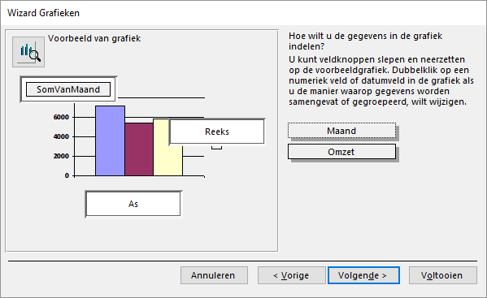
Figuur 6.24: Voorstel indeling grafiek.
Sleep het veld SomVanMaand uit het vak bij de verticale as naar het vak voor de horizontale as. De weergave langs de horizontale as wijzigt dan in
Maand.Sleep het veld Omzet naar het vak voor de verticale as. De weergave langs de verticale as wijzigt in
SomVanOmzet.
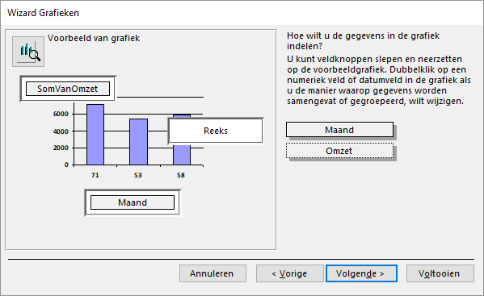
Figuur 6.25: Definitieve indeling grafiek
- Klik op Volgende. Hier selecteer je het veld in het formulier dat gekoppeld moet worden aan het veld in de grafiek. In beide gevallen is dat Doosnaam.
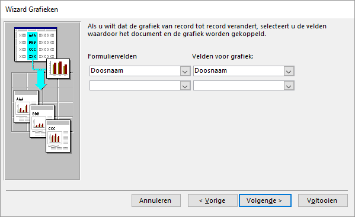
Figuur 6.26: Koppeling tussen velden formulier en grafiek
- Klik op Volgende. Geef de grafiek de naam Omzet per doos per maand in 2010 en kies er voor om de legenda niet weer te geven en klik daarna op Voltooien.
In de Ontwerpweergave wordt een voorbeeldgrafiek getoond en niet een grafiek met de echte gegevens.
Sluit het formulier en bewaar de wijzigingen.
Open het formulier in de Formulierweergave, blader door wat dozen en sluit daarna het formulier.
6.11 Taak: Gekoppelde formulieren
De gemakkelijkste manier om gekoppelde formulieren te maken is met behulp van de Wizard Formulier. Deze Wizard maakt de benodigde formulieren, zorgt voor de onderlinge koppeling en brengt op het hoofdformulier een opdrachtknop aan waarmee het subformulier geopend kan worden.
De opdracht is om een formulier te maken waarbij de gegevens van een klant getoond worden en dat via klik op een opdrachtknop de ordergegevens van de klant in een nieuw formulier getoond worden. Zie de volgende afbeelding.
Figuur 6.27: Twee formulieren gekoppeld met gesynchroniseerde gegevens.
Op het hoofdformulier komen de klantgegevens, alle benodigde velden hiervoor zijn beschikbaar in de tabel Klanten. In het subformulier staan de gegevens over de order zelf: ordercode en orderdatum. Op dit subformulier is een ander subformulier opgenomen met daarin de details van de order. De gegevens hiervoor komen uit de tabel Orderdetails.
Open zonodig database snoep365.accdb.
Kies tab Maken > Wizard Formulier (groep Formulieren).
Selecteer Tabel: Klanten in het vak Tabellen/query’s.
Figuur 6.28: Wizard Formulier keuze velden.
-
Voeg de volgende velden toe:
- Uit de tabel Klanten: Klantcode, Achternaam, Voornaam, Straat, Postcode, Plaats.
- Uit de tabel Orders: Ordercode, Orderdatum.
- Uit de tabel Orderdetails: Dooscode, Hoeveelheid.
Klik op Volgende. Kies voor weergave volgens Klanten en voor Gekoppelde formulieren.
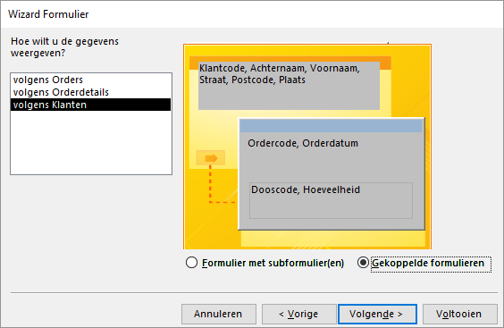
Figuur 6.29: Wizard gekoppelde formulieren.
Klik op Volgende. Nu kun je de formulieren een naam geven.
-
Geef de formulieren de volgende namen:
- 1e formulier: OrdersKlanten
- 2e formulier: OrdersKlantenSub1
- Subformulier: OrdersKlantenSub2
Klik op Voltooien.
Het hoofdformulier OrdersKlanten wordt nu geopend. Het ontwerp moet nog wat aangepast worden omdat de opdrachtknop OrdersKlantenSub1 onder het label OrdersKlanten zit en daardoor niet gebruikt kan worden.
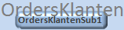
Figuur 6.30: Titel hoofdformulier met daaronder de onbereikbare opdrachtknop om het subformulier te openen.
-
Open het formulier OrdersKlanten in de Ontwerpweergave.
- Verwijder het label OrdersKlanten.
- Selecteer de opdrachtknop en wijzig via het Eigenschappenvenster de tekst van het bijschrift van
OrdersKlantenSub1inOrdergegevens.
Pas desgewenst de opmaak van de drie formulieren verder aan.
Schakel over naar de Formulierweergave en test de werking van de opdrachtknop.
Sluit het formulier en bewaar de wijzigingen.
Bij een standaardinstallatie van Access wordt elk document (tabel, query, formulier,rapport) in een afzonderlijk tabblad geopend. Bij gekoppelde formulieren is dat niet altijd handig. Bij het klikken op de opdrachtknop wordt het gekoppelde subformulier in een nieuw tabblad geopend. Je ziet dan de informatie in het hoofdformulier en het subformulier nooit tegelijk.
Wanneer je dat wel wilt moet je de instellingen voor de database zo wijzigen dat documenten in overlappende vensters verschijnen in plaats van in tabbladen. Dat kan als volgt.
- Kies Bestand > Opties > Huidige database.
- Selecteer Overlappende vensters onder Opties voor documentvensters.
6.12 Opgaven
form001 - Klanten
Maak een formulier klanten dat lijkt op de volgende afbeelding. Noem het formulier form001.
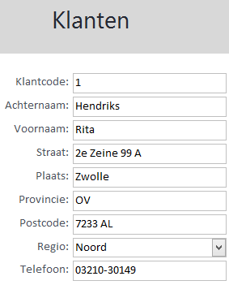
form002 - Bonbons in dozen
Maak een hoofdformulier met subformulier dat laat zien in welke dozen een bepaalde bonbon zit is en ook hoeveel daarvan. Noem de formulieren form002 hoofd en form002 sub.
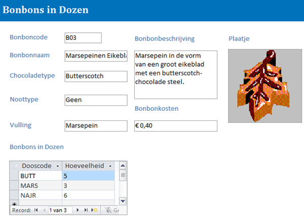
form003 - Dozen per klant
Maak een hoofdformulier met subformulier waarbij in het hoofdformulier de gegevens van een doos staan en in het subformulier de totale afzet per klant van deze doos. Maak daartoe eerst een query die het totale aantal bestelde dozen per doos per klant uitrekent. Noem de query Dozen per klant en de formulieren form003 hoofd en form003 sub.
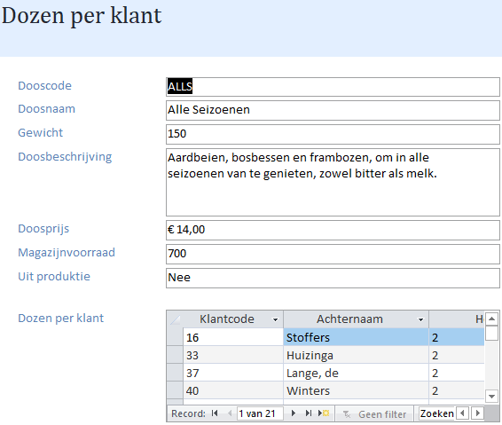